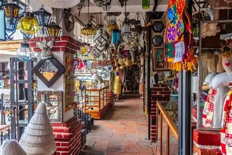

El Mercado de Artesanías en Valle de Bravo, México, es un punto de interés destacado para quienes desean experimentar la cultura local y adquirir productos típicos de la región Situado en la Avenida Benito Juarez, en el corazón del centro de Valle de Bravo, este mercado se encuentra en una ubicación privilegiada, con coordenadas 19.1982648 de latitud y -100.13162 de longitud, facilitando el acceso tanto a locales como a turistas.
